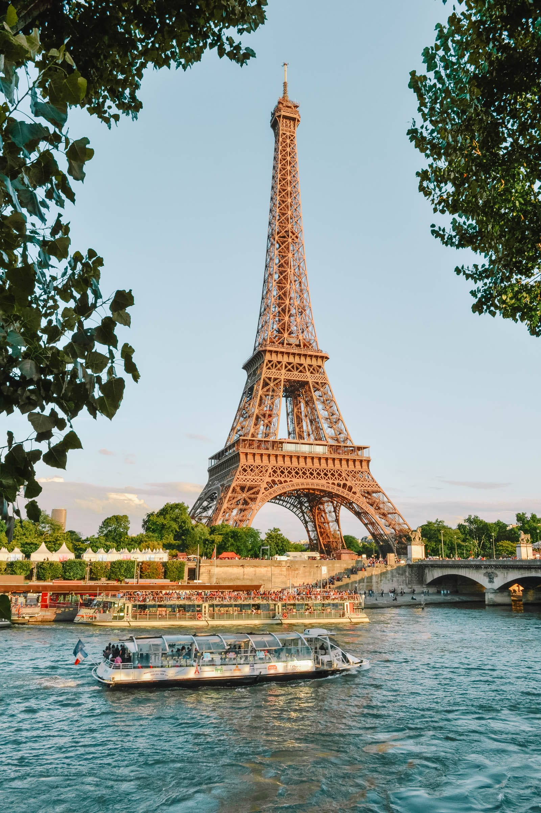

My Favorite Place

Europe, France
Paris, the City of Lights
Paris is one of the most famous cities in the world. People travel there for the Eiffel Tower, the art, the old buildings, and the amazing food. I picked it as my featured destination because there is so much to do in one city, from museums to cafes to small shops on cobblestone streets.
Top Things to Do
- Watch the sunset from the Eiffel Tower
- See the Mona Lisa at the Louvre Museum
- Take a boat ride down the Seine River
- Walk around the artist area of Montmartre
Travel Tip: Buy your museum tickets online before you go so
you can skip the long lines. Try to visit in April or October when the city
is less crowded.
Plan Your Trip